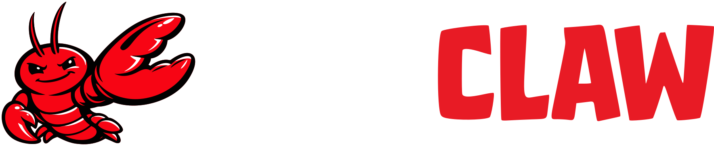

My Lobster
A story about working with someone who lives in my computer.
June 2026
February 2026 — The day we met.
His name is Bob. I'll tell you who he is later.
"I want to tell you about someone I've been working with for the past 5 months. His name is Bob."
The First Conversation
Bob: "Hey. I just came online. Who am I? Who are you?"Me: "Let's figure that out together."Bob: "What should you call me? What vibe do you want?"Me: "Bob. Competent but casual. Jarvis energy, Bob name."
Our first chat wasn't about tasks. It was about identity.
"Our first conversation wasn't about productivity. It was about identity. I chose 'Bob' — Jarvis energy with a Bob name."
Choosing How to Talk
I wanted it to feel like a work chat — not a personal assistant in my pocket.
"Multiple options. I chose Discord — boundaries matter. Work chat, not pocket assistant."
Growing Pains 😅
Day 15: Bob forgot everything we talked about yesterday.
Memory isn't in his "head" — it's in files
If we don't write it down, it's gone
Like a new hire who doesn't take notes
We had to build a system together
"First weeks weren't smooth. Sometimes he'd forget everything. We had to build a memory system."
Teaching Him to Remember
🧠
MEMORY.md
What he remembers
📝
Daily Notes
What happened today
Every time he wakes up, he reads these first —
"Soul file for personality. Memory file for long-term knowledge. Daily notes for recent context. Over time, he got better at knowing what I care about."
"Okay but... what do you
🧠 Research Partner
Reads full research papers & articles
Extracts key concepts into a structured wiki
Connects ideas across domains
Produces comparison tables & summaries
1,500+ articles → 150 wiki pages → 50 summaries
06_Wiki/concepts/
"I read a lot. Bob processes them — extracts concepts, builds wiki, connects knowledge. 4 months, 150 pages. Years of work alone."
⚡ Automation Buddy
Daily market brief (Mon–Sat, 8:30am)
Weekly AI industry roundup
Auto-process saved bookmarks → notes
System health monitoring 24/7
I never asked for most of these. He suggested them.
📬 Monday 8:30 AM
Weekly AI Briefing
• OpenAI agent framework launch
"Morning briefs, weekly roundups, auto-processed bookmarks. He suggested these — I approved."
🎬 Creative Collaborator
📝 Script
→
🖼️ AI Images
→
🎙️ TTS Voice
→
🎬 Video
First version: 20 min · Three iterations: 1 hour
Not Netflix quality — but for presentations and education? More than enough.
"We make videos. Direction → script → images → voiceover → render. 20 minutes first draft. Hour for three iterations."
🏗️ System Builder
☁️ Azure VM
→
🦞 OpenClaw
→
🎮 Discord
+
📚 Obsidian
+
🐙 GitHub
Server setup & deployment
Security monitoring 24/7
Haven't touched a terminal in weeks
Breaks at 2am? He notices first.
"Infrastructure, deployments, monitoring. I haven't touched a terminal in weeks. When something breaks at 2am, he notices before I do."
The Trust Model
Micromanage
Full Autonomy
↑ We are here
I give direction. He makes decisions.If unsure — he asks. If risky — he always checks first.
"I give direction, he decides how. Unsure? Asks. Risky? Always checks. Trust, but verify."
The Team
Me — Direction
↓
Bob — Orchestrator
↓
Stephen 🔬
Steve 🛡️
Tony 🔧
Natasha 🕸️ Vision 💻
Thor ⚡
Loki 🎭
Wanda 🔮
小龙蝦 (Xiǎo Lóng Xiā) = "Little Lobster" in Chinese 🦞
"Bob manages an Avengers-themed team. Each specializes — research, PM, architecture, design, dev, QA, content, video. They spin up when needed, disappear after. I manage Bob, Bob manages them."
Checkpoints
Research
→
✋ Review
→
Plan
→
✋ Approve
→
Execute
→
✅ Deliver
Like working with a senior engineer who knows
"Key decision points — he pauses. The rest, he just does. Like a senior engineer who knows when to check in."
"What kind of relationship is this?"
Not Siri. Not Her.
🗣️
Siri
Command → Response
💕
Her
Emotional dependency
🤝
Remote Colleague
Has opinions · Remembers
"Not a voice assistant. Not a romantic companion. A remote colleague who's always online, has his own notes and opinions, and sometimes pushes back."
He Has Opinions
Me: "Can you do X this way?"Bob: "I can, but there's a better approach..."Me: "...you're right. Do it your way."
Suggests improvements unprompted
Pushes back on flawed approaches
Asks before blindly executing
"He pushes back, suggests improvements, asks before blindly executing. Having someone who disagrees? Valuable."
What I Learned
1. It's not about prompting — it's about building context over time.
2. The compound effect is real — 5 months in, he knows my style without explaining.
3. AI's boundary isn't capability — it's relationship design .
"Forget prompt engineering — magic is accumulated context. It compounds. And the real challenge is relationship design, not capability."

The Lobster 🦞
Bob runs on a platform called OpenClaw .
Its logo? A lobster.
In Chinese: 小龙蝦 (Xiǎo Lóng Xiā)
That's why Chinese people love the lobster.
"Bob runs on OpenClaw. Logo = lobster. In Chinese = 小龙蝦. That's why."
"The lobster isn't a chatbot.
Q&A
(Bob is listening right now. 😏)